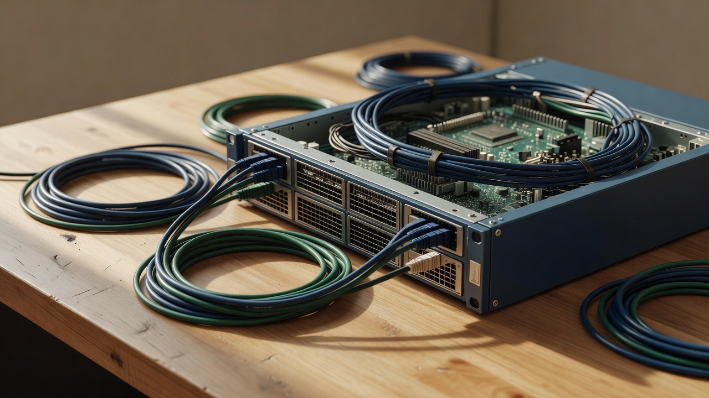

제품 상세 · /solutions/hci/ · 시안 1/21
Sangfor HCI
업무 시스템을 실행하는 통합 인프라를 검토할 때 여는 페이지입니다. 로컬 2.1.0 감사에 남은 제목과 같습니다. 제조사 사양을 BLRO의 공급·수행 약속으로 바꾸지 않습니다.
기획 질문: 업무 시스템과 현재 가상화 환경, 전환 제약, 데이터 보호는 무엇인가. 출처: PRODUCT-SCOPE.md, PRODUCT-CATALOG-PLAN.json (2026-09-08). 공식 URL: sangfor.com HCI. 확인일: 2026-09-30 시도, Cloudflare에 차단되어 본문 사양을 재수집하지 못함. 노드 수, 성능, 라이선스, 지원 하이퍼바이저는 확인 필요.
컴퓨트
업무 시스템을 올리는 층입니다. 대수와 성능은 이 그림에 없습니다.
스토리지
클러스터 안의 데이터 질문입니다. 별도 aStor 검토를 지우지 않습니다.
네트워크
업무망과 관리망을 한 선으로 그리지 않습니다.
관리
관리 화면이 보인다고 SCP 검토가 끝난 것은 아닙니다.
검토용 분해도입니다. 노드 수, 성능, 라이선스는 적지 않습니다. 제조사 도면의 복제가 아닙니다. 모션을 줄이면 네 층이 처음부터 보입니다.
역할
HCI는 컴퓨트와 스토리지, 네트워크를 한 클러스터로 묶어 업무 시스템을 올리는 검토 출발점입니다. BLRO 페이지에서의 역할은 그 출발점을 고객의 현재 가상화, 전환 제약, 데이터 보호와 연결하는 것입니다. 마케팅 문구의 통합률이나 절감률은 확인된 수치가 없어 적지 않습니다.
검토 조건
- 올릴 업무 시스템과 지금 가상화의 종류
- 전환 중 멈출 수 있는 시간과 되돌릴 조건
- 데이터 보호: 백업 주기, 보관 위치, 복구 담당
- 랙, 전력, 냉각, 기존 네트워크 구분
- 국내 공급과 BLRO 수행 범위 (미확정, B02/B03)
관련 제품
aSV는 가상화 계층입니다. HCI와 같이 볼 조건이 있고, 같은 문장이 아닙니다. Sangfor SCP는 관리할 자원과 운영 담당의 플랫폼입니다. 관리 화면이 HCI 안에 보인다고 해서 SCP 검토가 끝난 것은 아닙니다. aDesk VDI는 사용자와 단말의 업무 화면입니다. aStor는 별도 스토리지 질문입니다.
적용 한계
이 페이지는 특정 모델의 기능 보증이 아닙니다. 포트, 호환, 버전 동작은 공식 출처의 현재 문서로 확인해야 합니다. HCI를 도입한다고 방화벽, 스위치, 서버 접근 제어가 포함되지 않습니다. BLRO의 24시간 관제나 SLA를 의미하지 않습니다. 공급 미확정을 이유로 설명을 삭제하지는 않습니다. 미확정이라고 적습니다.

도입 준비
상담 전에 준비하면 좋은 것은 현재 클러스터 또는 서버 대수(대략), 주요 업무 시스템 이름, 가상화 제품명, 백업이 있는지, 중단 가능 창구입니다. 모델명이 없어도 상담은 열립니다. 잘못된 제품 ID를 견적 조건으로 저장하지 않습니다.
실재 자료
이 시안에는 다운로드 파일이 없습니다. 승인된 한국어 자료가 기술자료실에 연결되기 전에는 "등록된 공개 파일 없음"이 정직한 상태입니다. 로컬 2.1.0 사용성 기록에는 HCI에 한국어 자료 3건이 연결되었다는 과거 검증이 있습니다(FEEDBACK.md). 그 파일명과 현재 빌드의 일치는 이 시안에서 재확인하지 않았습니다. 확인 필요.
제조사 공식 페이지: 위 URL. 릴리스 노트와 호환 표는 엔지니어 경로에서 공식 확인 단계를 거칩니다.
저장소에서 라이선스가 확인된 Sangfor 제품 사진을 찾지 않았습니다. 임의 제품 사진을 넣지 않습니다.
고객: 이 제품 상담 준비. 관심 제품 hci. 엔지니어: 기술 지원은 버전과 증상을 적습니다. 파트너: 협력 문맥이면 역할을 파트너로 바꿉니다. 이 시안은 접수를 보내지 않습니다.
도입·운영 상담하기